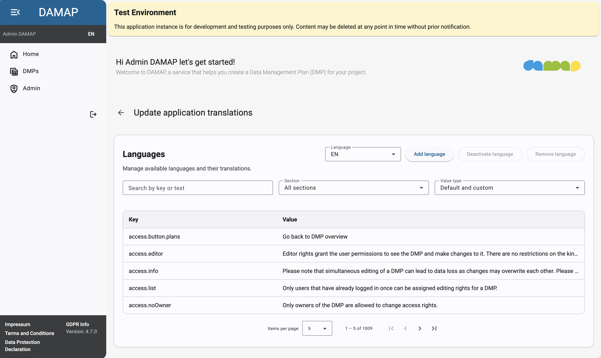
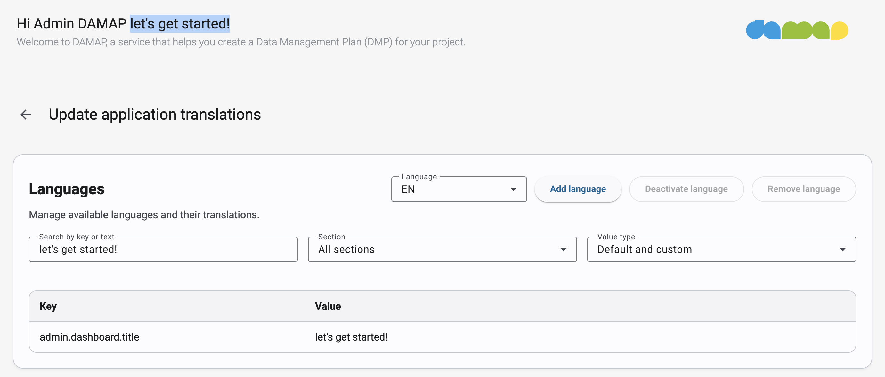
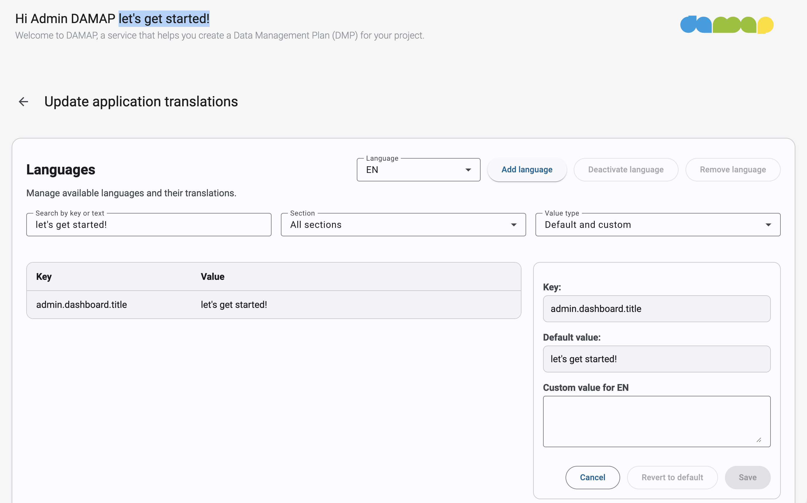
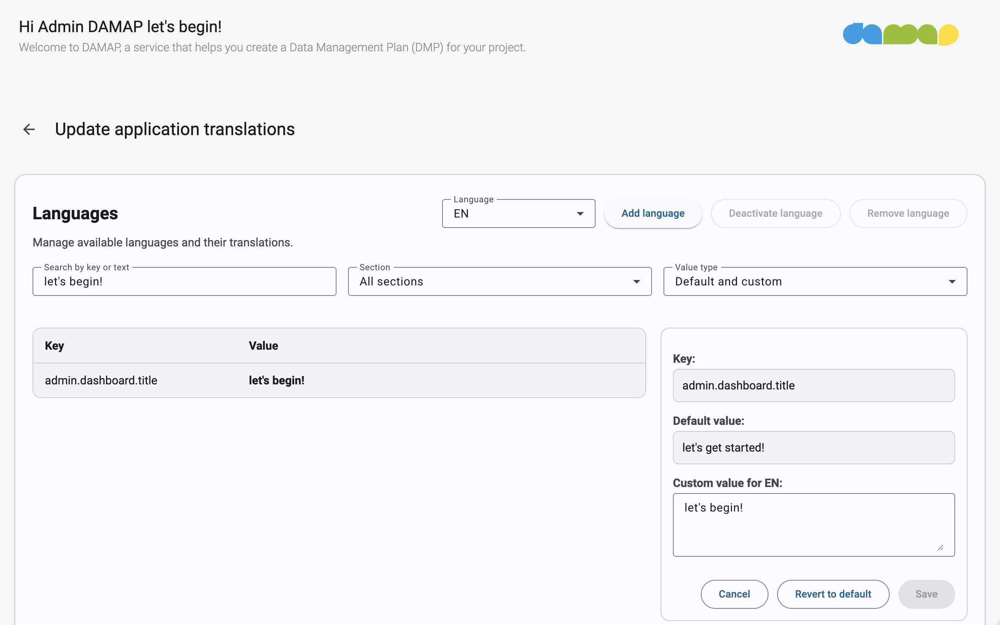
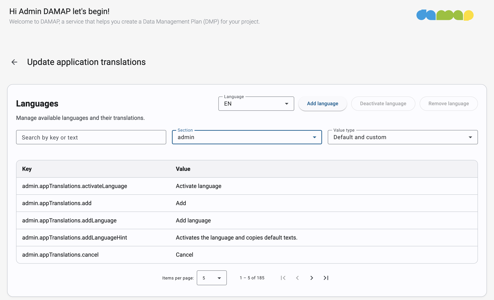
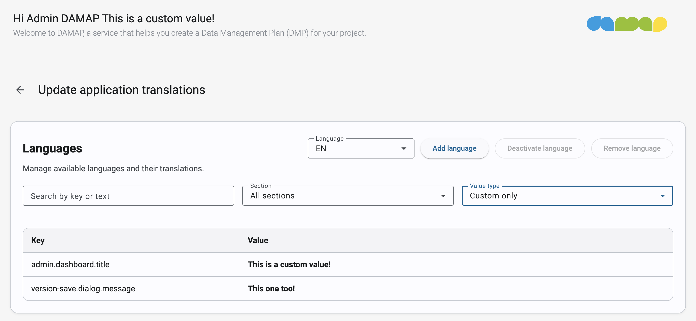
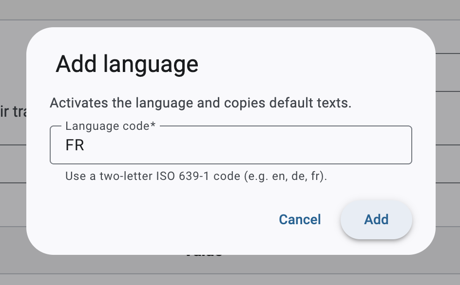
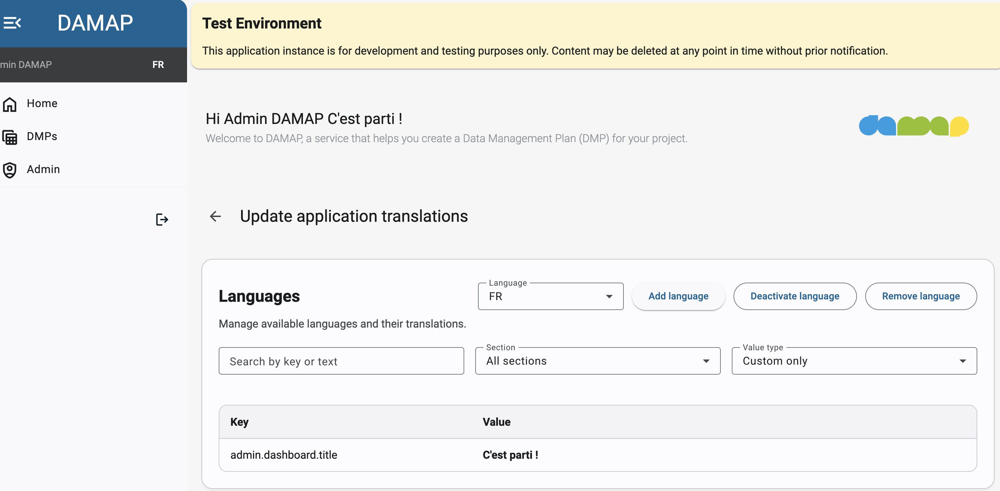
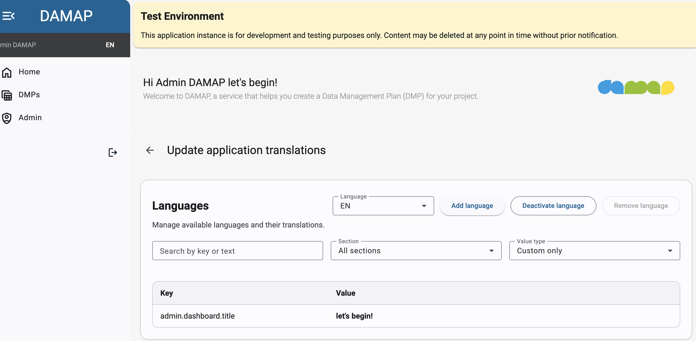
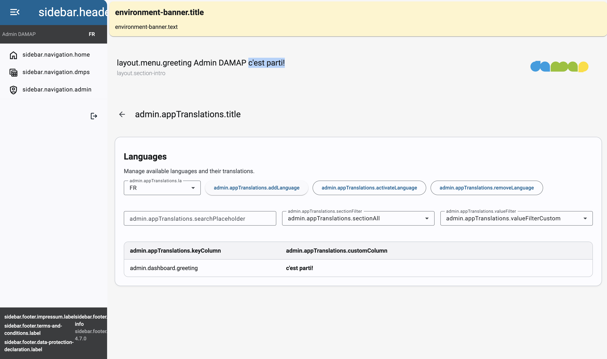

Customizing texts¶
DAMAP provides a built-in text customization interface that allows administrators to customize text / translations at runtime through the Admin Page -> Translations Page.
Page structure¶
The page features multiple parts: Filters, Actions, Results, and Editor.

Thought process¶
Every DAMAP deployment comes with the English language out of the box. This means users can select it in the sidebar on the top left. An admin can do one of the following two things:
- Change some text for the English language
- Create an entire new language
Changing text¶
A simple example would be customizing a specific piece of text somewhere in the application, for example the greeting on the top of the page "let's get started". To edit the text, first copy-paste it in the Search by key or text input field in the Filters section, as follows:

In the Results table, you should see the entry that correspond to the "let's get started" text you searched for. Clicking on this entry opens the Editor section on the right:

Text values¶
The English language has default values for every piece of text on the website. Default values cannot be changed and the English language cannot be deleted. This ensures that pieces of text cannot be lost.
An admin can set custom values in the Editor section, which take precedence over defaults by writing text in the "Custom value for EN" field and clicking the "Save" button. This overrides the original text in the user interface with your custom value:

Notice that in the greeting, the text "let's get started!" has changed to "let's begin!".Text keys¶
Every piece of text on the website is uniquely identified by a key. In the previous screenshot, the "let's get started!" text has the key "admin.dashboard.greeting". Every key has been chosen such that anyone can quickly understand where that piece of text is located in the application. In this case, it translates to "On the admin page -> in the dashboard -> the greeting".
These keys simplify sorting, filtering, and searching within the translation system. Since keys are searchable like regular text, searching for a prefix such as "admin.dashboard" will return all texts belonging to that section.
To view all translations related to a specific area, such as the Admin Page, administrators can use the section dropdown next to the search field to display all text snippets associated with that page, section, or key prefix.

Further filtering¶
The last filter allows admins to show only those snippets of text that have or have not been modified:

Notice that the table shows custom values in bold so they are easier to spot.Adding a language¶
The second big feature of the translations panel is the ability to add languages. In the Actions section, by clicking on "Add language", the admin can input a language code, like "FR" or "ES", and add it to the system:

This creates a new language with the same default values as English. This means that, at first, switching from English to the new language and back will not change anything. However, the admin can modify the custom values for this new language, which allows for a full translation of the website:


Notice that the greeting changes based on the language selected in the sidebar.This new language is enabled by default, which means that users can select it in the sidebar and see the custom values. If the admin disables it, users will not be able to select it. This allows admins to work on a translation without making it public until it's ready (the admin can still select it in the sidebar for testing). This is what a deactivated language looks like:

Notice that all texts appear as their keys, except for the greeting, which is a custom value that has been set for this language.Removing a language¶
Every language can be completely deleted, except for English. This is a non-reversible action, so be careful when doing it. If the language might be needed again in the future, it's better to just deactivate it instead of deleting it. Every language, including English, can be deactivated, but the system enforces that at all times at least one language is active. This ensures that users can always select a language in the sidebar and see some text on the website.